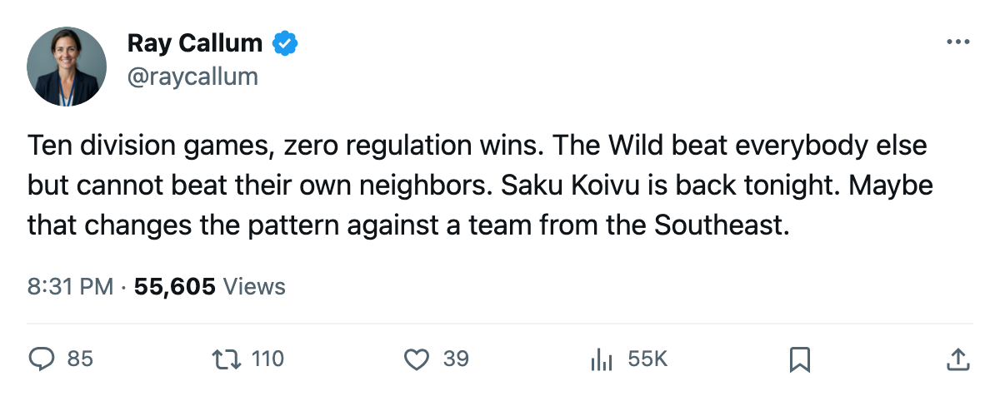

Numbers Game: Minnesota Has Not Won in Regulation Against a Division Rival All Season
The Wild are 0-6-2-2 in 10 Northwest games, with all 8 of their regulation wins coming against everyone else
 Ray CallumSenior correspondent · Home Ice Network
Ray CallumSenior correspondent · Home Ice Network
 Minnesota Wild has played 10 games against the
Minnesota Wild has played 10 games against the  Calgary Flames,
Calgary Flames,  Edmonton Oilers,
Edmonton Oilers,  Colorado Avalanche, and
Colorado Avalanche, and  Vancouver Canucks. The Wild have not won one in regulation.
Vancouver Canucks. The Wild have not won one in regulation.
The division record reads 0 wins, 6 regulation losses, 2 overtime wins, 2 overtime losses. In 10 games they scored 23 goals and allowed 31. Against Edmonton Oilers they are 0-2. Against Vancouver Canucks they are 0-3. Against Calgary Flames they are 0-1 with an overtime loss. Against Colorado Avalanche they are 0-1 with one overtime result each way.
Minnesota Wild's 8 regulation wins this season have all come against clubs outside the Northwest. That accounts for all 31 points: 8 regulation victories, 5 overtime wins, 12 regulation losses.
Tonight they host someone from outside the division
The  Carolina Hurricanes Hurricanes arrive at Xcel Energy Center on December 15, the first meeting between these clubs this season. Carolina Hurricanes carries 37 points, 7th in the East, and has won 3 straight. The Hurricanes have scored 91 goals and allowed 88 across 31 games.
Carolina Hurricanes Hurricanes arrive at Xcel Energy Center on December 15, the first meeting between these clubs this season. Carolina Hurricanes carries 37 points, 7th in the East, and has won 3 straight. The Hurricanes have scored 91 goals and allowed 88 across 31 games.
Minnesota Wild is 5-11 at home and 8-6 on the road. They play better on the road, and tonight they get a non-division opponent in their own building.
 Jochen Hecht76 signed with Columbus on December 8... no. Let me correct that: Hecht signed with Minnesota Wild on December 8 at $407,290. He went on the injured list with a neck injury between December 11 and December 15 and is out until December 18.
Jochen Hecht76 signed with Columbus on December 8... no. Let me correct that: Hecht signed with Minnesota Wild on December 8 at $407,290. He went on the injured list with a neck injury between December 11 and December 15 and is out until December 18.
 Saku Koivu86 has joined the lineup after an absence, slotting in on the top line for tonight.
Saku Koivu86 has joined the lineup after an absence, slotting in on the top line for tonight.  Manny Fernandez90 carries 23 starts of 30 games and will get the net.
Manny Fernandez90 carries 23 starts of 30 games and will get the net.
Minnesota Wild needs a regulation win tonight to put a dent in the division record. The 8-6 non-division mark says they can do it. The 5-11 at home says the building hasn't helped.
